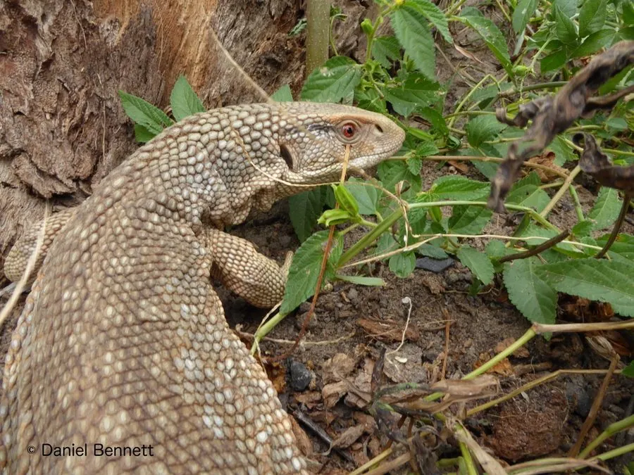

爬行动物 · 动物界
草原巨蜥 Varanus exanthematicus

非洲稀树草原上的中小型巨蜥，喜欢用分叉长舌探寻气味，以昆虫和小型动物为食，也是常见的异宠。
- 分类
- 门脊索动物门纲爬行纲目有鳞目科巨蜥科属巨蜥属
- 栖息环境
- 非洲撒哈拉以南的稀树草原、半干旱灌丛与白蚁丘附近
- 地理分布
- 非洲西部、东部和南部的稀树草原地区
- 保护级别
- IUCN 无危（LC）；CITES 附录 II；非中国原产
物种志
草原巨蜥体长 0.9–1.5 米，体重 1–4 千克，头小而圆，吻端钝，身体粗壮，背面呈灰褐或黄褐色并带深浅斑纹，四肢短而结实，尾部粗壮。它的皮肤厚实，颈部皮肤松弛，遇到危险时会把身体鼓起来并发出嘶嘶声威胁对方。
它分布于非洲撒哈拉以南的稀树草原和半干旱地区，栖息在地面或废弃洞穴中，白天活动，靠分叉长舌收集气味分子，捕食昆虫、蜗牛、蚯蚓、蛙和小型啮齿动物，尤其喜欢取食白蚁和甲虫。每年雨季前后繁殖，雌蜥在土洞或白蚁丘中产卵约 20–40 枚，孵化期约 5–6 个月。它性格相对温顺，被大量捕作宠物贸易，目前野外种群仍较稳定，被列为无危物种。
形态与习性
- 食性昆虫、蜗牛、蚯蚓、蛙和小型啮齿动物
- 体长0.9–1.5 m
- 体重约 1–4 kg
- 寿命约 10–15 年
- 繁殖卵生，每窝 20–40 枚，孵化约 5–6 个月
- 活动节律昼行性，常在地面搜寻猎物
- 防御鼓起身体并发出嘶嘶声威吓
趣味知识
- 草原巨蜥常用分叉的长舌收集气味，再通过口腔顶部的感受器辨别猎物。
- 它厚实的皮肤和鼓胀身体的动作，是躲避捕食者的一种威吓手段。
- 草原巨蜥因温顺易养成为异宠，但野生个体的捕捉贸易受国际公约监管。